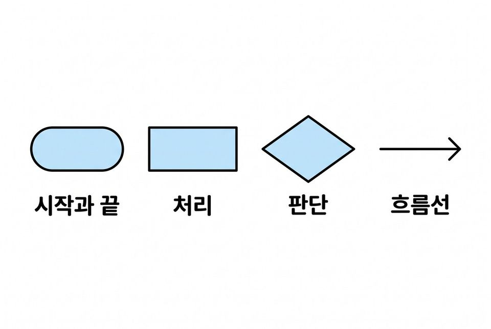
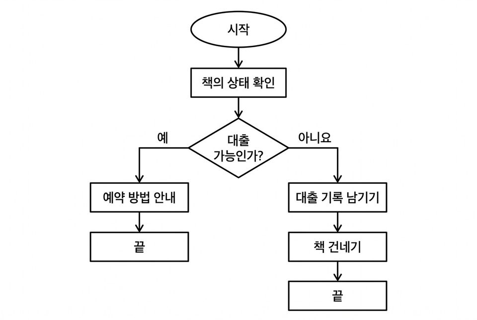

5학년 9~10차시 알고리즘 [5실소프트웨어02-01]
가상 도서관 사서 로봇의 규칙을 순서도로 나타내고 시험하기
학습 문제 — 가상 도서관 규칙을 순서도로 나타내고, 두 가지 경우로 시험해 잘못된 곳을 고쳐 봅시다.
개요
| 성취기준 | [5실소프트웨어02-01] 놀이를 통해 알고리즘을 체험하고, 문제를 해결하는 절차를 다양한 방법으로 표현한다. 연계 성취기준: [6실05-01], [06자율-2] |
|---|---|
| 핵심 역량 | 지식정보처리 역량, 창의적 사고 역량 |
| 핵심 기능 | ① 일상생활의 문제를 해결하기 위한 알고리즘 구상하기 ② 순서도 기호의 쓰임 구분하기 ③ 규칙을 기호 카드로 순서도 포스터에 표현하기 ④ 두 가지 경우로 따라가며 실행해 보기 ⑤ 근거를 들어 고치기 |
| 가치 태도 | 생활 속에서 컴퓨터를 활용해 해결 가능한 문제를 탐색해 보려는 자세 문제 해결의 순서를 끝까지 따져 보고 빠진 단계를 찾아 고치려는 자세 |
교수학습 활동
9차시 도입 동기 유발 · 학습문제 제시9차시 전개 활동1. 기호 카드와 규칙 알아보기 · 활동2. 기호 카드로 순서도 포스터 만들기10차시 전개 활동3. 사람 순서도 걸으며 잘못된 곳 찾기 · 활동4. 고치고 다시 시험하기10차시 정리 배운 내용 정리 · 다음 차시 예고
9차시도입8분
동기 유발
- 양말과 신발을 신는 순서를 바꾸면 어떻게 될지 이야기 나누기
- 해결단 5호 미션: 우리 반 가상 도서관 ‘사서 로봇’의 설계도 그리기
- 순서도 활동지를 받아 가상 도서관 규칙 함께 읽기

학습문제 제시
- 가상 도서관 규칙을 순서도로 나타내고, 두 가지 경우로 시험해 잘못된 곳을 고쳐 봅시다.
자료순서도 활동지, 해결단 5호 미션 카드, [도입] 상황 그림
유의점규칙 이해가 어려우면 교사가 한 줄씩 읽어 주고 번호를 붙이게 한다.
유의점활동지 배부와 자리 정돈 시간을 도입 시간에 포함한다.
9차시전개32분
활동1. 기호 카드와 규칙 알아보기 (12분)
- 가상 도서관 규칙을 읽고 대출이 될 때와 안 될 때 할 일 견주기
- 시작·끝은 타원, 처리는 직사각형 기호 카드 확인하기
- 판단은 마름모, 흐름 방향은 화살표 카드 확인하기
- 기호 들기 놀이: ‘끝’·‘예약 방법 안내’·‘대출 가능인가?’를 듣고 맞는 카드 들기

활동2. 기호 카드로 순서도 포스터 만들기 (20분)
- 기호 카드를 오려 시작 → 책 상태 확인 → 대출 가능 판단 차례로 붙이기
- 대출이 되는 쪽은 기록 남기기 → 책 건네기 → 끝으로 잇기
- 대출이 안 되는 쪽은 예약 방법 안내하기 → 끝으로 잇기
- 마름모 카드는 반으로 접어 세우고 두 갈래 길은 테이프로 잇기
- 짝에게 설명하고 역할을 바꿔 두 갈래를 손가락으로 따라가기
- 처리와 판단의 차이를 정리하고 빠진 곳 고치기
- 도전: ‘연체한 책이 있는가?’ 판단을 하나 더 넣어 보기
준비물필기구, 가위, 풀, 4절 도화지, 색 마스킹테이프(예·아니요 두 색)
자료순서도 활동지, 순서도 기호 카드
유의점판단은 예·아니요로 길이 갈리는 질문임을 짚고, 기호 모양 외우기로 끝내지 않는다.
유의점그림 솜씨가 아니라 규칙대로 따라갈 수 있는지를 본다.
유의점한 갈래만 그린 학생에게는 대출이 안 되는 책은 어디로 가는지 되묻고, 어려워하면 뼈대 순서도를 준다.
10차시전개33분
활동3. 사람 순서도 걸으며 잘못된 곳 찾기 (15분)
- 대출 가능한 책·대출 중인 책에서 나와야 할 결과를 먼저 적기
- 책 카드를 들고 바닥에 놓인 잘못된 순서도를 따라 걷기
- 고치지 말고 화살표대로만 걸어 도착한 결과 적기
- 나온 결과가 미리 적은 결과와 같은지 확인하기

활동4. 고치고 다시 시험하기 (18분)
- 규칙과 다른 연결을 찾아 갈래는 그대로 두고 화살표만 바꾸기
- 고친 뒤 같은 두 경우로 다시 걷기
- 고치기 전후의 결과와 고친 까닭 적기
- 내 순서도 포스터도 같은 두 경우로 확인하고 빠진 화살표 채우기
- 옆 모둠과 포스터를 바꿔 두 경우로 따라가고 확인 스티커 붙이기
준비물책 카드 2장(대출 가능·대출 중), 바닥용 대형 기호 카드, 확인 스티커
자료순서도 활동지, 시험 활동지, [활동3] 잘못된 순서도 카드
유의점두 경우를 모두 시험하게 한다.
유의점바닥 순서도는 모둠마다 차례로 걷고, 기다리는 모둠은 활동지로 따라가게 한다.
유의점빨리 끝낸 학생은 ‘예약된 책’ 같은 세 번째 경우를 시험하게 한다.
10차시정리7분
배운 내용 정리 (5분)
- 한 가지 경우만 시험하면 무엇을 놓칠 수 있는지 말하기
- 무엇을 근거로 고쳤는지 각자 적기
다음 차시 예고 (2분)
- 같은 문제를 푸는 여러 방법을 견주고 우리 문제의 절차를 만드는 활동 안내 듣기
- 활동지와 순서도 포스터를 정리해 내기
자료시험 활동지
유의점쓰기를 어려워하는 학생은 말로 확인한다.
유의점결석이나 미제출로 확인하지 못한 학생은 따로 적어 두고 보충 확인 시점을 정한다.
평가 계획
컴퓨팅 사고력 · 알고리즘 표현과 검증
주어진 규칙을 순서도로 나타내고, 두 경우의 결과를 근거로 잘못된 곳을 고칠 수 있는가?
| 수준 | 평가 기준 |
|---|---|
| 매우 잘함 | 기호·갈래·처리 순서를 규칙대로 순서도 포스터에 나타내고, 두 경우의 결과를 규칙과 견주어 고친 까닭을 설명한 뒤 같은 두 경우로 다시 확인한다. |
| 잘함 | 두 경우가 규칙대로 흘러가는 순서도 포스터를 만들고, 잘못된 곳을 고친 뒤 결과를 확인한다. |
| 보통 | 처리와 판단은 구분하나 일부 연결이 빠지거나, 고친 뒤 확인이 부족하다. |
| 노력요함 | 교사의 도움을 받고도 규칙에 맞는 흐름을 표현하거나 잘못된 곳을 찾는 데 어려움이 있다. |
| 미관찰 | 결석이나 미제출로 확인하지 못한 경우. 낮은 성취로 적지 않고 따로 기록한 뒤 보충 확인 시점을 정한다. |
평가 방법 활동지·포스터 분석 · 구술 확인 · 관찰
연동 도구·링크
과정안에 나오는 도구가 저절로 걸립니다. 수업 전에 학교망에서 열리는지, 블록·메뉴 이름이 바뀌지 않았는지 확인하세요.
이 차시는 외부 도구 없이 종이·실물로 운영합니다.
내 수업 링크
학급 패들렛, 엔트리 작품, 활동지 주소처럼 이 차시에 쓸 링크를 걸어 둡니다. 이 브라우저에만 저장되고 밖으로 보내지 않습니다. 학생 이름이 든 주소는 넣지 마세요.